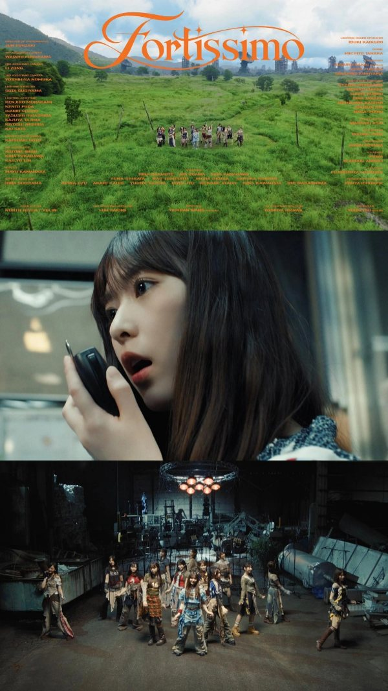

PRODUCTION STAFF
乃木坂46「フォルテシモ」Music Video

【PA work】
乃木坂46「フォルテシモ」Music Video
制作進行として携わらせていただきました！
ーーーーー
Credit
Director : Yichuan Wang (maxilla)
1st Assistant Director：Yoshiya Hizawa
2nd Assistant Director / Tension：Fuh Sakimi
Director of Photography : Jun Ishizaki
1st Assistant Camera： Wataru Furukawa
2nd Assistant Camera：LI ZONG
3rd Assistant Camera：Yoshihisa Nomura
Lighting Director : Sota Sugiyama
Lighting Board Operator : Ibuki Katagiri
Lighting Assistant : Kenjiro Murakami / Kento Fuda / Isamu Suzuki / Yasushi Higashida / Kazuya Tajima / Kiyoshi Nishida / Kai Sato
Production Designer : Katsuaki Goto
Set Decorator : Kotone Imon / Kina Fukagawa / KAO YU LIN
Drone : Michito Tanaka
Colorist : Youri Sakata
Online Editor : Masaaki Asai
CG Director : Takuro Yoda
CG Artist : FUWA
CG Artist : Tkachou Andrei
Compositor : Kouki Murata
Stylist : Mayu Kawahara
Stylist Assistant : Hina Sugiyama
Transport :
Lighting Equipment Driver : Suguru Sakai (ReStart)
Location : Fujinomiya Location
Production Manager : Kouya Ichinose
Production assistant : Ryohta Morikawa / Misako Makka / Shiori Kondo / Rina Tanaka / Kasumi Morikawa/ Aoi Shimizu/ Maho Nagai
Production : NORTH RIVER / VELIN
Producer : Yudai Ido